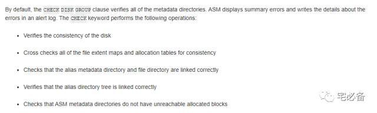

Dismount和Drop磁盘组
原创 2017-11-03 Oracle 宅必备
这个专题讲ASM相关的内容
上节讲了ASM镜像和磁盘组冗余
这节是讲Dismount和Drop磁盘组
1. Mount及Dismount磁盘组
-
ASM实例开启后会自动mount ASM_DISKGROUPS 参数中的磁盘组
-
ASM实例在关闭前会自动dismount 所有的磁盘组
-
ASM同样会在你create 和drop磁盘组的时候自动mount和dismount磁盘组
-
有时我们可能需要手动的进行磁盘组的相关操作
-
如果我们尝试dismount 一个有文件正在被使用的磁盘组，该命令则会失败，可使用force选项强制进行
-
ASM集群环境中，如果使用RESTRICTE模式开启实例，则其他节点的ASM实例无法mount磁盘组，任何数据库无法使用上面的磁盘组，主要用来做快速的平衡
1.1 dismount 所有磁盘组
ALTER DISKGROUP ALL DISMOUNT;
1.2 mount 一个磁盘组
ALTER DISKGROUP dgroup1 MOUNT;
1.3 使用force选项mount磁盘组
Normal及High类型的磁盘组只要磁盘组保存一份完整的数据拷贝，则可以使用force选项mount磁盘组
在ASM集群环境中，如果一个ASM实例不是第一个mount磁盘组的，则MOUNT FORCE命令失败
ALTER DISKGROUP disk_group_name MOUNT FORCE
2. 检查磁盘组元数据的一致性
主要检查如下东西:

ALTER DISKGROUP dgroup1 CHECK ALL;
可使用上面命令检查磁盘组元数据的一致性
可使用REPAIR | NOREPAIR选项决定需不需要自动修复，默认为NOREPAIR
3. Drop磁盘组
删除磁盘组可以让你删除一个磁盘组，也可以包含里面的文件，默认不删除
如果磁盘组中有文件但不指定INCLUDING CONTENTS选项则会失败
集群环境中删除前许确定磁盘组没有被其他实例mount
当你drop磁盘组时，如果使用的是spfile的话,首先会dismount磁盘组，然后删除磁盘组，最后将该磁盘组
从ASM_DISKGROUPS初始化参数中移除,否则需要手动修改pfile
DROP DISKGROUP dgroup1 INCLUDING CONTENTS;
删除前ASM实例必须开启，磁盘组必须mount状态并且没有里面文件没有被使用，命令在删除完成前不会返回
如果磁盘组无法mount，我们可以使用force选项强制删除磁盘组
DROP DISKGROUP disk_group_name FORCE